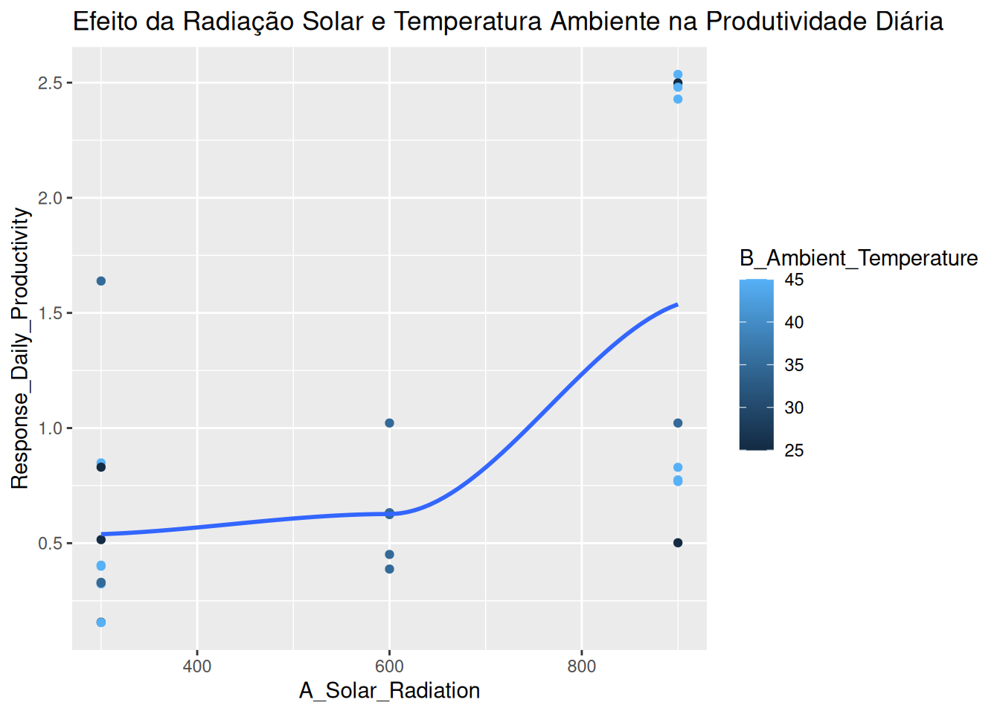
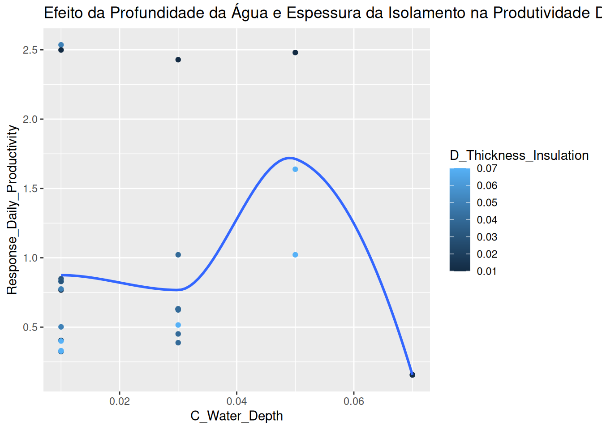

# Pacotes necessários
library(tibble)
library(dplyr)
Anexando pacote: 'dplyr'Os seguintes objetos são mascarados por 'package:stats':
filter, lagOs seguintes objetos são mascarados por 'package:base':
intersect, setdiff, setequal, unionlibrary(ggplot2)
library(rsm)
# Recriar os dados conforme tabelas do artigo
dados <- tibble::tribble(
~Run, ~A_Solar_Radiation, ~B_Ambient_Temperature, ~C_Water_Depth, ~D_Thickness_Insulation, ~Response_Daily_Productivity,
1, 600, 35, 0.03, 0.04, 0.38761,
2, 600, 35, 0.03, 0.04, 0.45108,
3, 600, 35, 0.03, 0.04, 0.62997,
4, 300, 45, 0.01, 0.03, 0.84856,
5, 600, 35, 0.03, 0.04, 0.62997,
6, 600, 35, 0.03, 0.04, 0.63244,
7, 900, 45, 0.01, 0.05, 2.53573,
8, 900, 45, 0.01, 0.01, 0.76763,
9, 900, 25, 0.01, 0.01, 2.49854,
10, 300, 45, 0.01, 0.03, 0.32334,
11, 900, 45, 0.01, 0.05, 0.77491,
12, 300, 25, 0.01, 0.07, 0.83017,
13, 300, 45, 0.01, 0.01, 0.4045,
14, 900, 25, 0.01, 0.05, 0.50184,
15, 300, 35, 0.05, 0.07, 1.63863,
16, 900, 45, 0.01, 0.03, 0.82953,
17, 300, 25, 0.07, 0.01, 0.15661,
18, 300, 45, 0.01, 0.07, 0.40005,
19, 900, 45, 0.05, 0.01, 2.48021,
20, 300, 35, 0.01, 0.07, 0.33008,
21, 600, 35, 0.03, 0.04, 0.62413,
22, 600, 35, 0.03, 0.04, 0.62997,
23, 300, 25, 0.03, 0.07, 0.51539,
24, 300, 45, 0.07, 0.01, 0.15523,
25, 900, 45, 0.03, 0.01, 2.42855,
26, 300, 35, 0.01, 0.07, 0.32757,
27, 600, 35, 0.03, 0.04, 0.62997,
28, 900, 35, 0.05, 0.07, 1.02184,
29, 600, 35, 0.03, 0.04, 0.62997,
30, 600, 35, 0.03, 0.04, 1.02184
)
# Ajustar o modelo conforme descrito no artigo
modelo <- rsm(Response_Daily_Productivity ~ A_Solar_Radiation + B_Ambient_Temperature + C_Water_Depth + D_Thickness_Insulation +
A_Solar_Radiation:B_Ambient_Temperature + A_Solar_Radiation:C_Water_Depth + B_Ambient_Temperature:C_Water_Depth +
A_Solar_Radiation^2 + B_Ambient_Temperature^2 + C_Water_Depth^2 + D_Thickness_Insulation^2,
data = dados)
# Obter elementos analíticos
anova(modelo)Analysis of Variance Table
Response: Response_Daily_Productivity
Df Sum Sq Mean Sq F value Pr(>F)
A_Solar_Radiation 1 4.6819 4.6819 11.7336 0.00242 **
B_Ambient_Temperature 1 0.0794 0.0794 0.1990 0.65988
C_Water_Depth 1 0.0409 0.0409 0.1024 0.75196
D_Thickness_Insulation 1 0.0164 0.0164 0.0412 0.84108
A_Solar_Radiation:B_Ambient_Temperature 1 0.1802 0.1802 0.4516 0.50858
A_Solar_Radiation:C_Water_Depth 1 0.2400 0.2400 0.6016 0.44624
B_Ambient_Temperature:C_Water_Depth 1 0.5078 0.5078 1.2726 0.27144
Residuals 22 8.7784 0.3990
---
Signif. codes: 0 '***' 0.001 '**' 0.01 '*' 0.05 '.' 0.1 ' ' 1summary(modelo)
Call:
rsm(formula = Response_Daily_Productivity ~ A_Solar_Radiation +
B_Ambient_Temperature + C_Water_Depth + D_Thickness_Insulation +
A_Solar_Radiation:B_Ambient_Temperature + A_Solar_Radiation:C_Water_Depth +
B_Ambient_Temperature:C_Water_Depth + A_Solar_Radiation^2 +
B_Ambient_Temperature^2 + C_Water_Depth^2 + D_Thickness_Insulation^2,
data = dados)
Residuals:
Min 1Q Median 3Q Max
-0.6814 -0.2620 -0.1769 0.1128 1.3810
Coefficients:
Estimate Std. Error t value Pr(>|t|)
(Intercept) 2.712e+00 2.284e+00 1.187 0.248
A_Solar_Radiation -1.619e-03 2.634e-03 -0.615 0.545
B_Ambient_Temperature -6.052e-02 5.237e-02 -1.156 0.260
C_Water_Depth -4.393e+01 3.387e+01 -1.297 0.208
D_Thickness_Insulation -4.328e+00 6.773e+00 -0.639 0.529
A_Solar_Radiation:B_Ambient_Temperature 6.981e-05 6.314e-05 1.106 0.281
A_Solar_Radiation:C_Water_Depth 1.564e-02 2.640e-02 0.592 0.560
B_Ambient_Temperature:C_Water_Depth 9.610e-01 8.518e-01 1.128 0.271
Residual standard error: 0.6317 on 22 degrees of freedom
Multiple R-squared: 0.3956, Adjusted R-squared: 0.2033
F-statistic: 2.057 on 7 and 22 DF, p-value: 0.09274# Gráficos de superfícies de resposta
ggplot(dados, aes(x = A_Solar_Radiation, y = Response_Daily_Productivity, color = B_Ambient_Temperature)) +
geom_point() +
geom_smooth(method = "loess", se = FALSE) +
labs(title = "Efeito da Radiação Solar e Temperatura Ambiente na Produtividade Diária")`geom_smooth()` using formula = 'y ~ x'
ggplot(dados, aes(x = C_Water_Depth, y = Response_Daily_Productivity, color = D_Thickness_Insulation)) +
geom_point() +
geom_smooth(method = "loess", se = FALSE) +
labs(title = "Efeito da Profundidade da Água e Espessura da Isolamento na Produtividade Diária")`geom_smooth()` using formula = 'y ~ x'